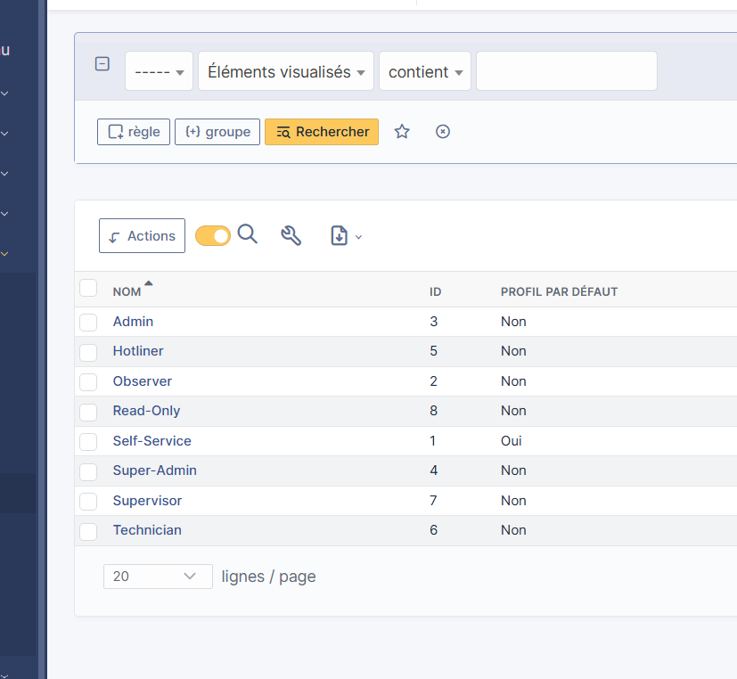
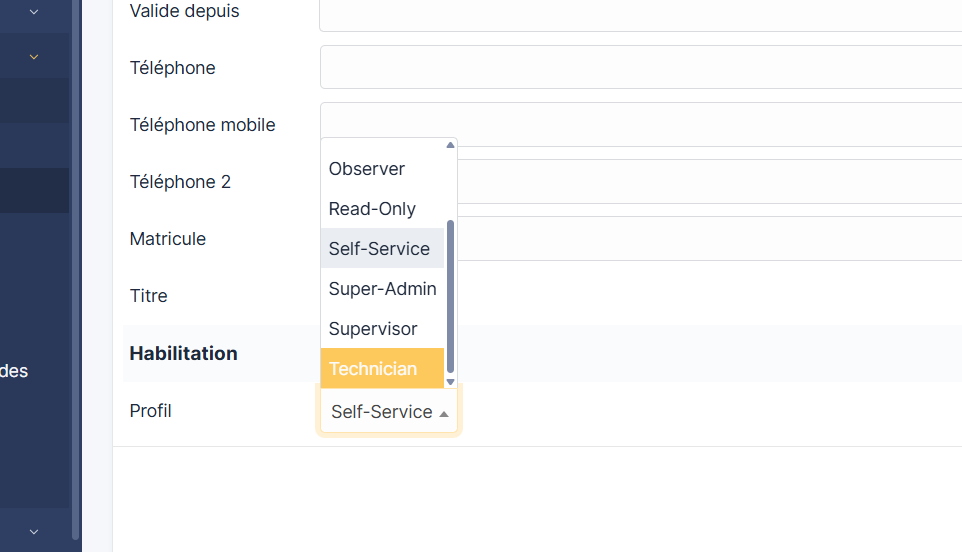
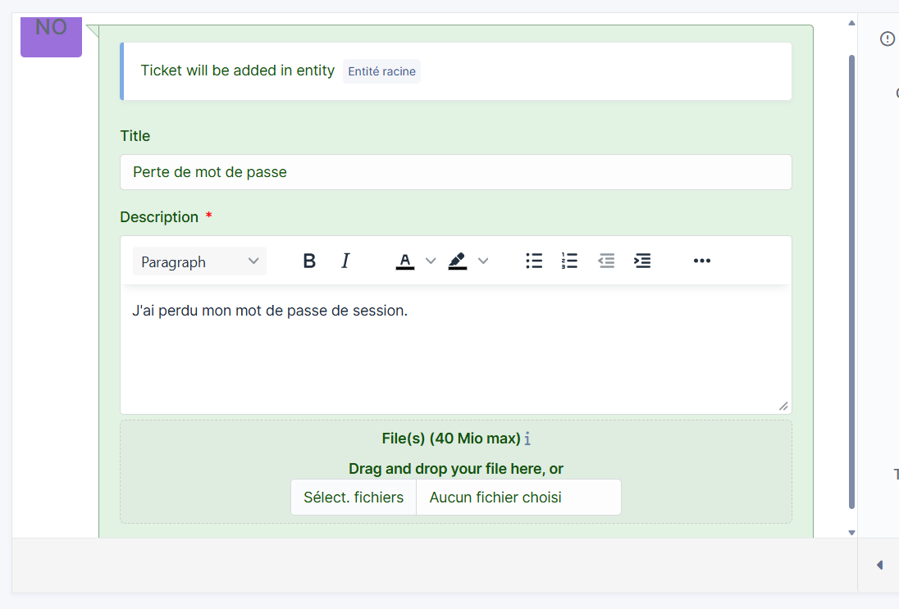
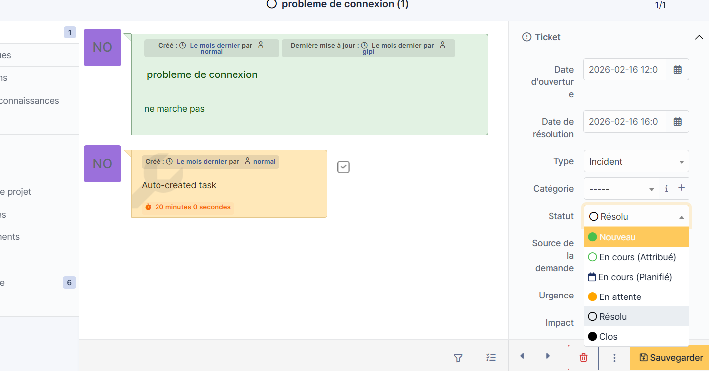

Portefolio BTS SIO
TP GLPI
Gérer le patrimoine informatique
Mettre en place et vérifier les niveaux d'habilitation associés à un service
- Gestion des profils utilisateurs
- Modification des droits selon les profils


Gérer les sauvegardes
- Connexion base de donnée
- Gestion profils Windows server
Répondre aux incidents et aux demandes d'assistance et d'évolution
Traiter les demandes concernant les services réseau et système, applicatifs.
- Création de tickets
Gestion des tickets:
- Manuelle
- Assisté par IA (Tiny llama , Ministral)

